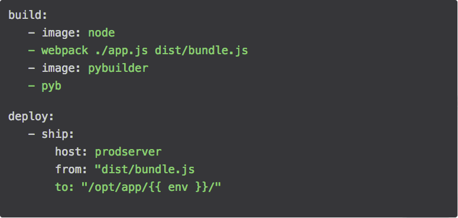
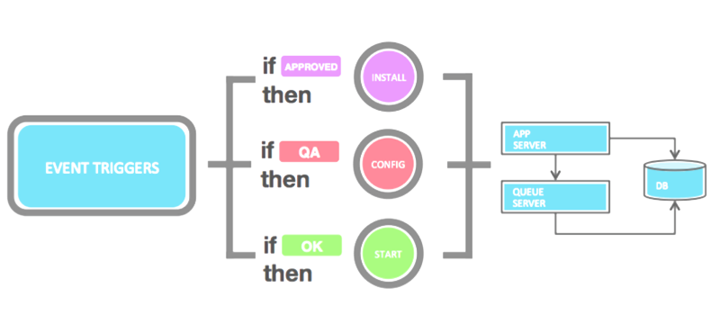
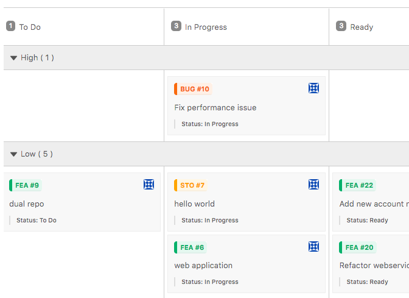
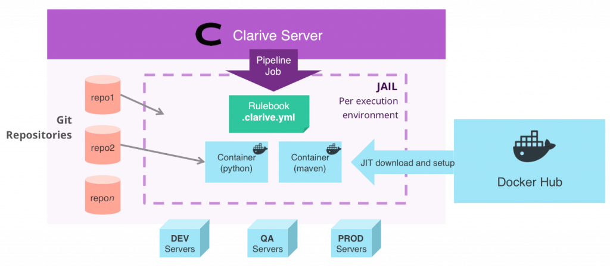

Features
This is a list of our key product features.
All code, track and deploy features are available in the Standard Edition. Enterprise features, when not available in the Standard Edition, are indicated separatedly.
CODE
Fast Git Server
Velops is a HTTP(s) based Git repository manager with project and role level authentication and branch management.
Continuous Integration
Push to a branch and Velops will kick-off your CI build and test pipelines.
You can use global pipelines and predefined natures so that you don't have to write
a pipeline for every new project.
Auto-merging
Velops merges topic branches in and out of releases, keeping history clean and tidy.

Rulebooks
Add a
.velops.yml file to your repository and define your DevOps automation pipelines using rule-based event triggers.
Write DevOps code in your language
Turn your Python, Node, Ruby, Go (or any language really) into reusable rules for your rulebooks.
Orchestration Webhooks
Expose your automation rules to other services across the networks creating devops microsservices that can be reused and are tied with the flow of your delivery.
Code Review
Add comments to code and interact with your peers.
Projects can have more than one repository
Projects are projects, repositories are repositories. A project may have more than one repo. It's that simple.
Git push triggers
Write rules that are triggered when someone pushes code to a repository.

Private Repositories
Repositories in the Velops cloud are private by default, but can be shared with other teams or be global.
Event Rules
Kick off your event hooks when topics are created, fields are modified or workflow status changes.

TRACK
Every Issue is now a Topic
Topics make it simpler to manage your project: branches are 1:1 with their corresponding topic (Feature, User Story, Bugfix, etc.) making them true topic branches.

Kanban boards
Velops's powerful kanban boards help you quickly visualize your topics in any arrangement. Boards can be personalized or used by the team.
Scrum Out-of-the-box
Velops comes setup with a set of topic categories that can scale from simple coding features/bugfixes to complete epics, user stories and sprints.

Multi-Project Releases
Releases can group changes from more than one project at the same time. This makes it easier to manage complex releases with many teams working at once.
Built-in Workflow Engine
Topics have statuses like In Progress, Ready, Frozen, etc. You can customize workflows for better control when and where to move your topics from and to and who can do it (EE only)
Custom Dashboards
Create your own dashboards, and rearrange them with drag-and-drop.
Nested Issues, Epics, Topics
Features can belong to Epics and Releases. Issues tied to bugfixes, nested into user stories. Levels can be easily navigated and searched.
Column Lists
Kanban topics can be grouped into any lists, so that you can bisect your project in many ways.
Swimlanes
Swimlanes lets your team quickly view and rearrange posts in a kanban board. Users can drag-and-drop between swimlanes to reassign topics. Swimlanes can also display your custom fields.
Custom Fields
Kanban topics can be grouped into any lists, so that you can bisect your project in many ways.
Specialized Roles
Team members can be assigned roles that can do different things for different projects.

DEPLOY
CI/CD Engine
Run pipelines on a schedule, monitored and on push to repository. Velops will monitor execution and let you ajust.


Docker under the hood
All CI/CD runs in a Docker service in the Velops server or as part of your swarm.
Deploy-from-kanban®
Drop your kanban cards and into an environment to create a deployment.

Environment Management
Setup environments, their variables and a workflow for progressing releases on demand.
Release Planning
Plan your releases, add or remove features and bugfixes and freeze them when ready to deploy.
Releases in Velops are not simple tags. They have a workflow and can be staged and reviewed
just like other topics.

Concurrency Control
Setup critical sections dynamically to prevent simultaneous deployments from running into each other.
Scheduled deployments and nightly builds
Create repeatable jobs or schedule on-demand deployments to run on a given date/time.
Tracked Assets
Keep track of every file you deploy: where it was deployed, when and its signature.
Pipeline profiling
Pinpoint bottlenecks to help optimize your pipelines and overall workflow with execution profiling data.
Rollback
Rollback your deployments by running your rules against the previous known safe version.
Artifact Repository
Manage artifacts generated during deploy so that they can be easily aggregated and shared with teams and builds, snapshotting or used for the deploy phases.